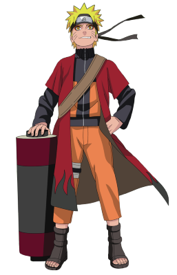

"Я не сбегаю и я никогда не беру свои слова назад! Это мой путь ниндзя!"
Наруто Узумаки (яп. うずまきナルト, Узумаки Наруто) — шиноби Деревни Скрытого Листа из клана Узумаки.
В день своего рождения Наруто стал Джинчурики Девятихвостого Демона-Лиса Кьюби, в результате чего он стал изгоем для большей части людей в Конохе на протяжении всего своего детства.
После присоединения к команде Какаши, Наруто упорно трудился, чтобы получить признание всех в деревне и исполнить свою заветную мечту стать Хокаге.
В последующие годы, благодаря многим трудностям и испытаниям, он стал способным ниндзя, которого считали героем Конохагакуре, и после во всем мире, он стал известен как Герой Скрытого Листа.
Вскоре, он оказался одним из ключевых факторов победы в Четвертой Мировой Войне Шиноби, что в конце-концов привело его к достижению своей мечты, когда он стал Седьмым Хокаге.